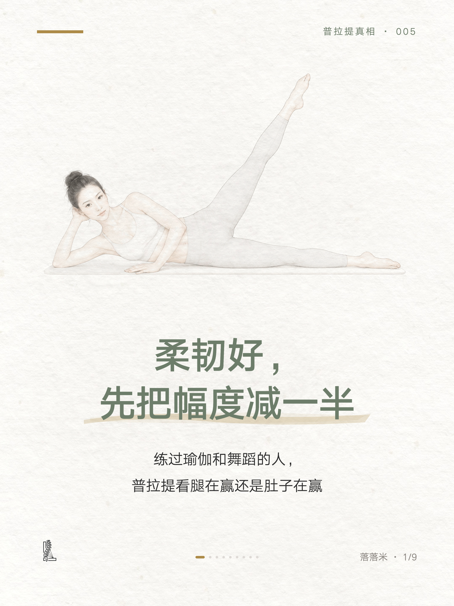
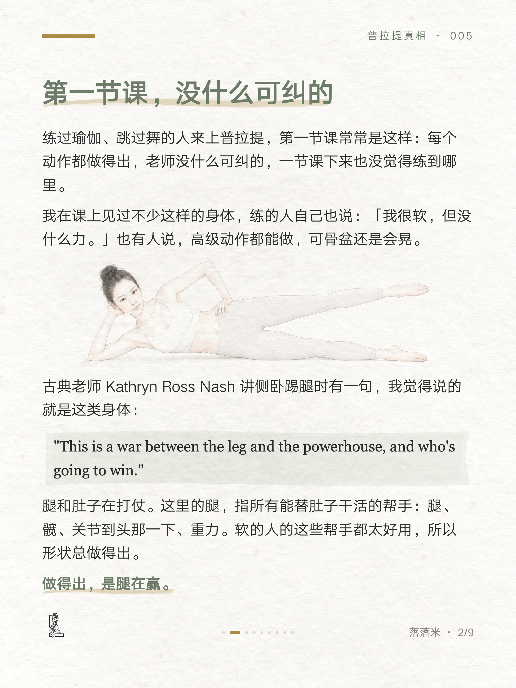
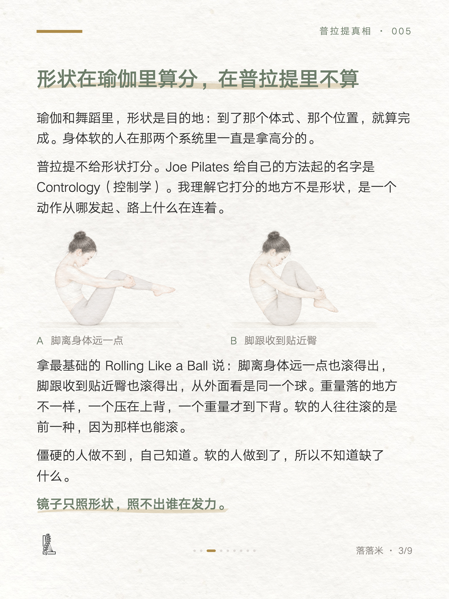
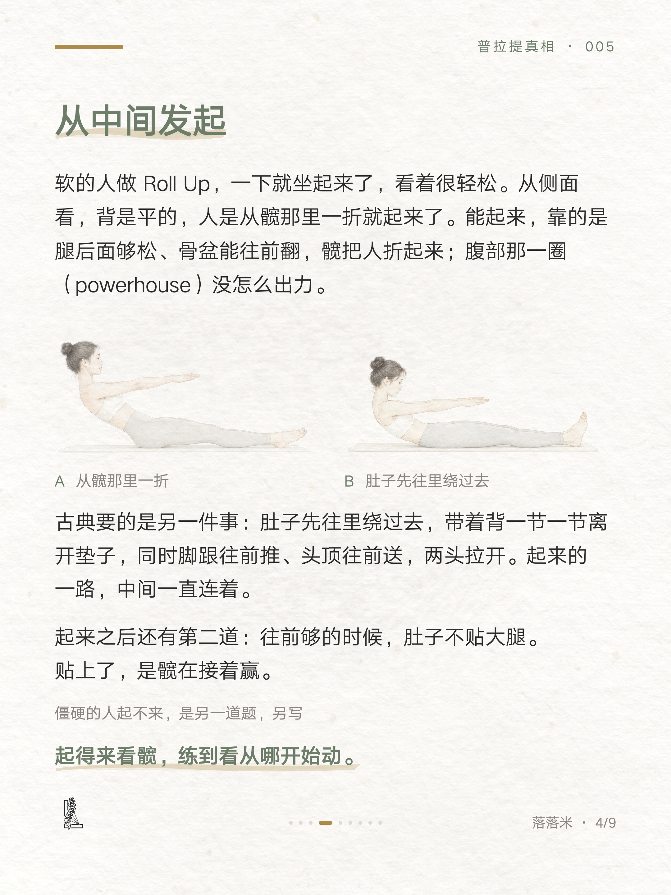
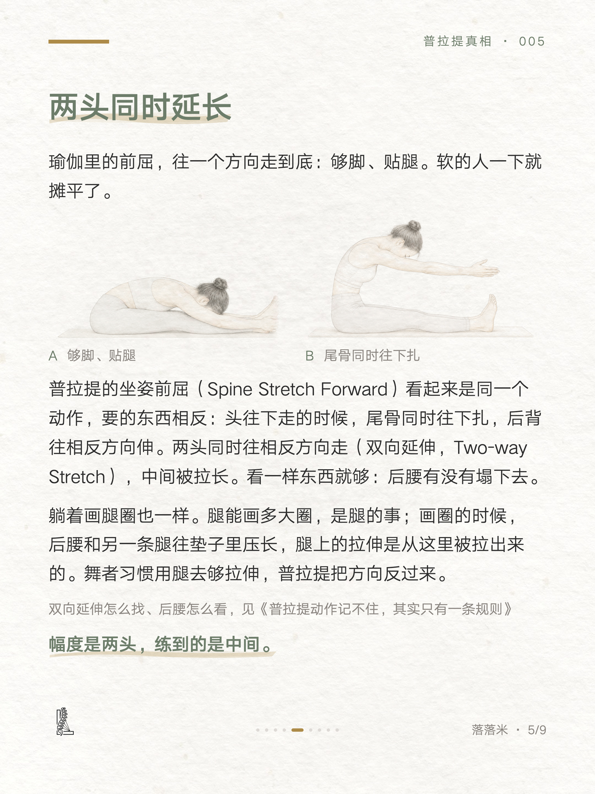
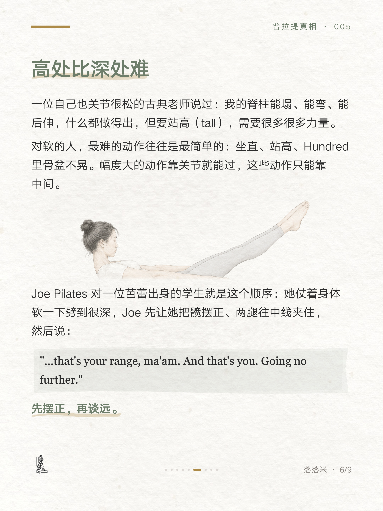
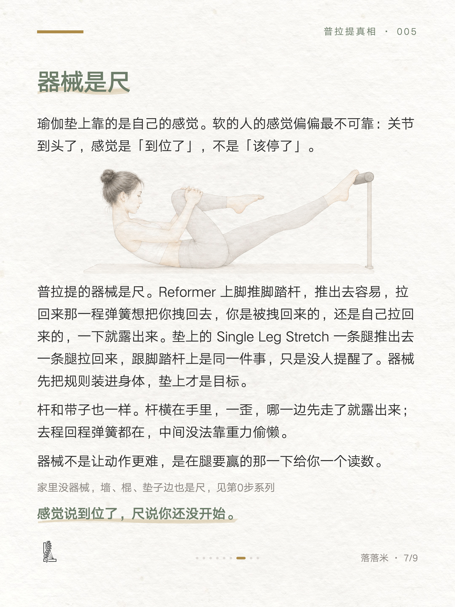
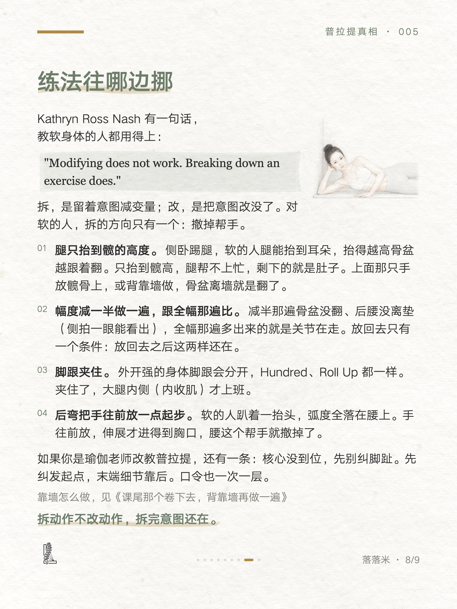
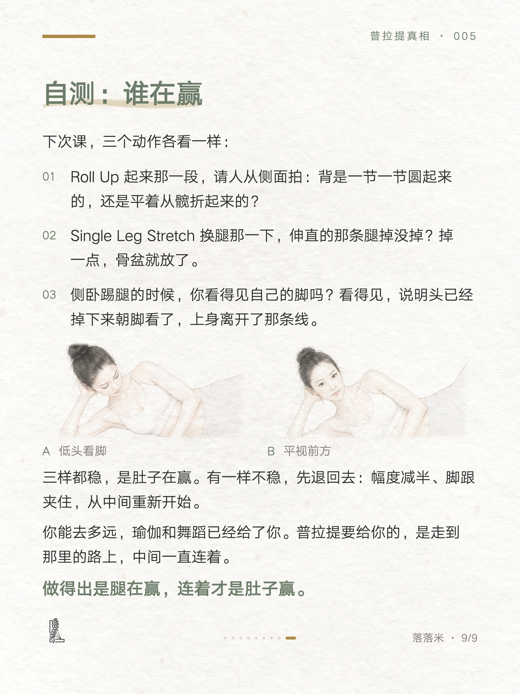

普拉提真相 #005
柔韧性好的人练普拉提，先把幅度减一半

1 / 9

2 / 9

3 / 9

4 / 9

5 / 9

6 / 9

7 / 9

8 / 9

9 / 9
← 左右滑动浏览全部卡片 →
练过瑜伽、跳过舞的人上普拉提，第一节课常常每个动作都做得出，老师没什么可纠的，一节课下来也没觉得练到哪里。「每个动作都做得出」和「很软但没什么力」，说的是同一件事。
有位古典老师说，侧卧踢腿时腿和肚子（powerhouse）在较劲，看谁赢。软的人身体里的帮手太好用，腿、髋、关节、重力，所以形状总做得出。
瑜伽和舞蹈里形状是目的地，到了就算；普拉提不给形状打分，算的是一个动作从哪发起、路上什么在连着。软的人做到了，所以不知道缺了什么。
四件可以看的事：Roll Up 是从肚子绕过去带起来的，还是从髋一折起来的；前屈时后腰塌没塌；最简单的坐直站高，有没有比劈叉更难；拿掉器械之后，规则还在不在。
练法只有一个方向：撤掉帮手。腿只抬到髋高，幅度减半跟全幅比，脚跟夹住，后弯手往前放。你能去多远，瑜伽已经给了你；普拉提要给的，是路上中间一直连着。